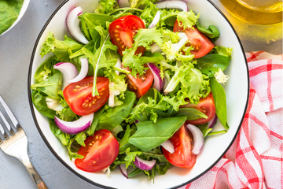

Quer perder peso e não sabe como?
Cansado(a) das mesmas dietas sem graça?
Uma alimentação equilibrada pode ajudar-nos a prevenir doenças, manter um peso saudável e ter mais energia.
Agende uma consulta e receba seu cardápio personalizado, chega de refeições sem graça e sem sabor.
Sobre mim
Olá, eu sou Ana Maria, nutricionista apaixonada por transformar vidas através da alimentação saudável. Com mais de 5 anos de experiência em consultório, ajudo pessoas que desejam perder peso, ganhar mais disposição e melhorar sua relação com a comida de forma prática e prazerosa. Acredito que cada corpo é único e, por isso, desenvolvo planos alimentares personalizados, que respeitam a rotina, as preferências e os objetivos de cada paciente. Nada de dietas radicais ou cardápios sem graça — meu foco é ensinar que é possível se alimentar bem sem abrir mão do sabor.
Áreas de atuação:
- Reeducação alimentar
- Emagrecimento saudável
- Nutrição para bem-estar e energia no dia a dia
- Acompanhamento nutricional para quem busca qualidade de vida
Minha missão é mostrar que comer bem não precisa ser complicado: basta ter orientação certa, equilíbrio e escolhas inteligentes.
Se você busca mudança de hábitos e quer alcançar seus objetivos com saúde e leveza, vou adorar acompanhar você nessa jornada.
Ana Maria, nutricionista.
Serviços oferecidos
Consulta Nutricional Individual
Avaliação completa do histórico de saúde, hábitos alimentares e estilo de vida para montar um plano alimentar totalmente personalizado.
Plano Alimentar Personalizado
Cardápios práticos e flexíveis, adaptados à rotina do paciente, sempre respeitando preferências alimentares e objetivos (emagrecimento, energia, ganho de massa, etc.).
Acompanhamento Nutricional
Reavaliações periódicas para ajustar o plano alimentar, acompanhar resultados e garantir a evolução saudável.
Nutrição para Emagrecimento Saudável
Estratégias seguras e sustentáveis para perder peso sem restrições radicais ou dietas da moda.
Nutrição para Qualidade de Vida e Bem-estar
Orientação para quem deseja melhorar disposição, sono, digestão e equilíbrio no dia a dia.
Atendimento Online
Consultas e acompanhamento à distância, com a mesma qualidade do atendimento presencial.
Receitas
Strogonoff fit com batata doce
Ingredientes
- 1/2 peito de frango
- 1/2 cebola
- 1 xíc molho de tomate
- 1 batata doce
- pimenta do reino
- 1 fio de azeite
- 1 tomate
- 1 copo de iogurte natural
- alecrim
- sal
Modo de preparo
- Tempere o frango com sal e pimenta-do-reino.
- Em uma panela, aqueça 1 fio de azeite e refogue a cebola.
- Adicione 1 pitada de sal e o frango.
- Deixe refogar um pouco e acrescente o tomate.
- Adicione o molho de tomate e deixe cozinhar por 5 minutos.
- Em seguida, acrescente o iogurte natural.
- Misture bem e desligue o fogo.
- Cozinhe uma batata-doce com casca.
- Em seguida, corte-a em rodelas.
- Tempere as rodelas com sal e alecrim.
- Aqueça 1 fio de azeite e doure as rodelas de batata-doce.
- Sirva o strogonoff com a batata-doce e bom apetite!
Coxinha Low Carb
Ingredientes
- 1 fio de azeite
- 5 dentes de alho
- 500g peito de frango desfiado
- pimenta do reino
- 1 couve-flor picada
- 100g queijo meia cura ralado
- 1 cebola picada
- 1 tomate picado
- sal
- cheiro verde
- 150g de creme de ricota
- 1 xíc farinha de linhaça
Modo de preparo
- Em uma frigideira, aqueça 1 fio de óleo e reogue a cebola e o alho picado.
- Adicione o tomate e deixe refogar um pouco.
- Acrescente o frango desfiado, o sal, a pimenta-do-reino e o cheiro-verde.
- Transfira essa mistura para um processador e acresente a couve-flor picada.
- Bata tudo muito bem até formar a massa da coxinha.
- Em outra tigela misture o creme de ricota com o queijo meia cura ralado.
- Pegue um pedaço da massa e abra na mão.
- Recheie com a msitura de creme de ricota com queijo e feche, formando uma coxinha.
- Passe as coxinhas na farinha de linhaça.
- Coloque as coxinhas em uma forma e leve ao forno preaquecido (180° C) por cerca de 35 minutos.
Bolo diet de banana
Ingredientes
- 4 bananas
- 3 ovos
- 2 xíc de aveia
- canela
- 1 xíc de uvas passas
- 1/3 xíc de óleo
- 2 colheres de fermento
Modo de preparo
- Bater no liquidificador os ovos, óleo, banana e uvas passas.
- Em uma tigela à parte misturar a aveia, o fermento e a canela.
- Em seguida incorporar à mistura do liquidificador.
- Assar por 30 minutos em forno médio em uma assadeira untada.
Entre em contato
Agende uma avaliação